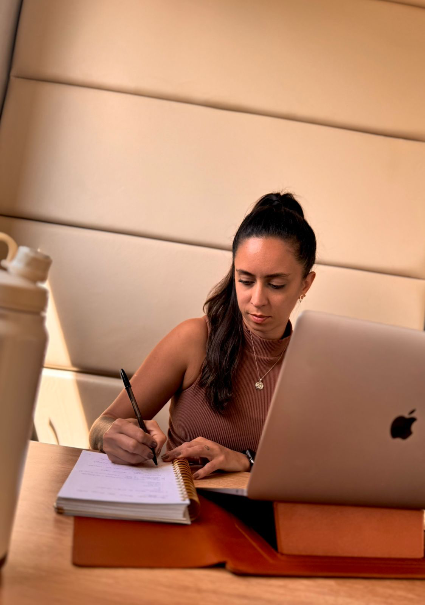
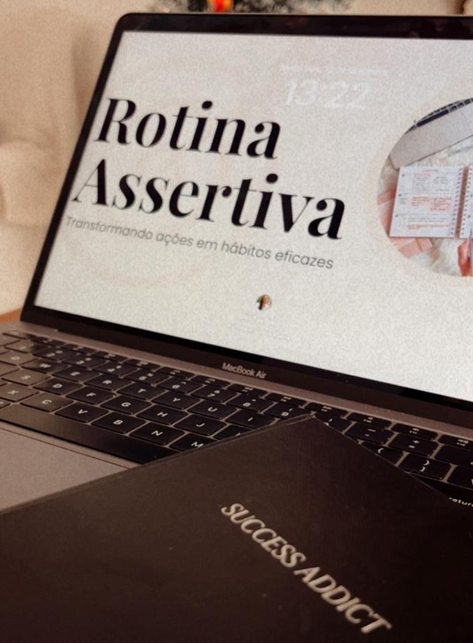

A estrutura invisível da constância: como sustentar metas, hábitos e resultados sem depender de motivação.
Quero minha vaga →
Você sabe o que fazer.
Mas não consegue sustentar.
Você cria metas, faz planos e promete que desta vez será diferente. Então perde o ritmo — não por falta de capacidade.
Mas porque ainda não construiu uma estrutura capaz de sustentar suas escolhas, todos os dias.

Um método de desenvolvimento pessoal focado em hábitos conscientes, clareza comportamental e estrutura de vida.
O objetivo não é gerar motivação temporária. É criar uma estrutura capaz de sustentar crescimento, evolução e resultados ao longo do tempo — com você, todos os dias.
Pagamento via cartão
Pagar com cartão (Kiwify) →Pix (chave)
228.760.638-67
Após o pagamento, envie o comprovante para: +55 (11) 97433-5478